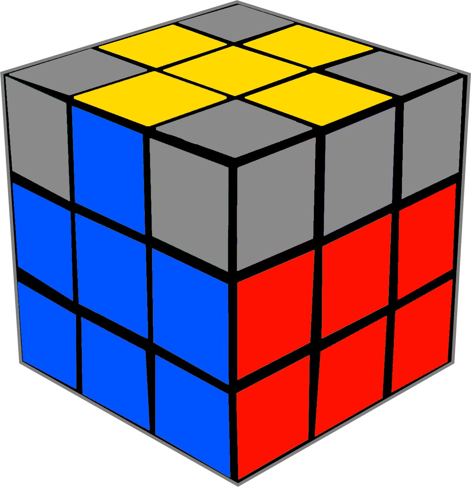
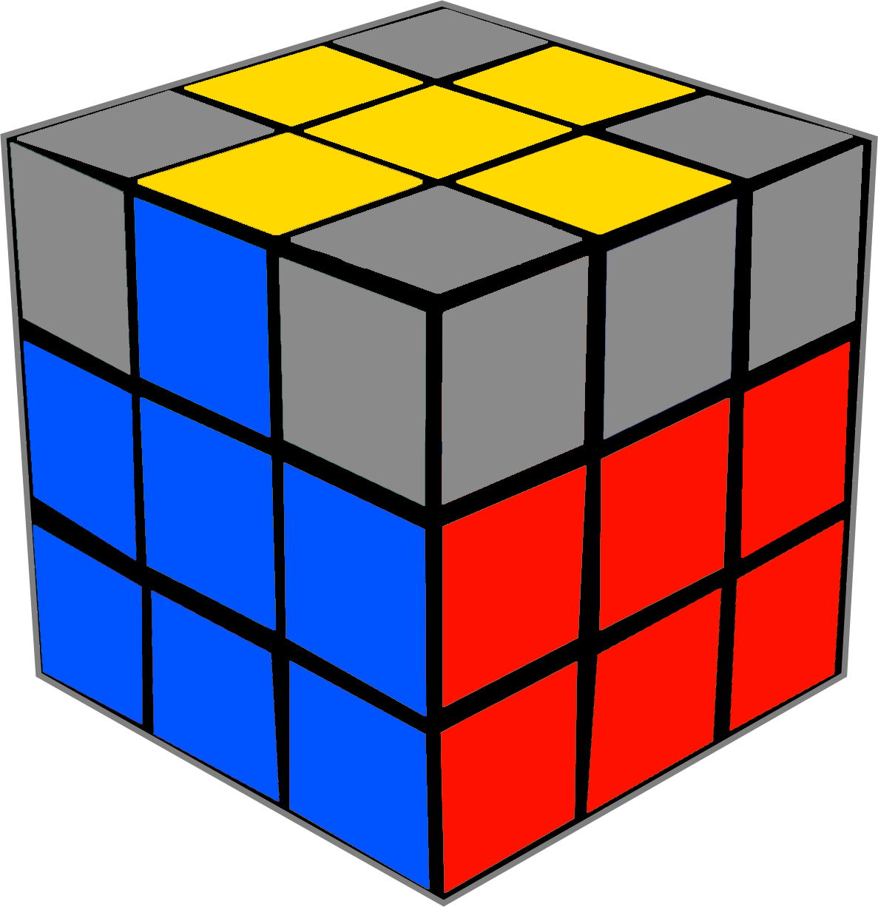

Per risolvere il cubo di rubik 3x3 si utilizzano degli Algoritimi, nonchè serie di mosse che hanno come scopo finale quello di risolvere il cubo.
Qui a destra troviamo le mosse che vengono utilizzate per risolvere il cubo di rubik
3x3 utilizzando il metodo più semplice.
U - UP - Rotazione della faccia superiore del cubo di 90° in senso orario.
D - DOWN - Rotazione della faccia inferiore del cubo di 90° in senso orario.
R - RIGHT - Rotazione della faccia destra del cubo di 90° in senso orario.
L - LEFT - Rotazione della faccia sinistra del cubo di 90° in senso orario.
F - FRONT - Rotazione della faccia frontale del cubo di 90° in senso orario.
B - BACK - Rotazione della faccia posteriore del cubo di 90° in senso orario.
La presenza di un apostrofo dopo la lettera (') sta ad indicare una rotazione in
senso antiorario di 90°.
La presenza di un due dopo la lettera (2) sta ad indicare una rotazione doppia della
faccia, cioè una rotazione in
senso antiorario di 180°.

La prima cosa da fare per risolvere il cubo è quella di scegliere una faccia di
riferimento, nel nostro caso la faccia bianca.
Per poter risolvere il cubo di rubik, è necessario creare una sorta di croce sulla
faccia di riferimento, in modo che gli spigoli siano allineati ai
centri dei colori corrispondenti, come nelle immagini mostrate qui sotto. Per questo step non
esistono degli algoritmi, ma basta semplicemente un po' di intuito.
Le due immagini qui sotto
rappresentano lo stesso cubo, semplicemente visto da due angolazioni opposte.


Il prossimo passaggio consiste nel collocare tutti gli angoli bianchi al loro
posto, in modo da completare la faccia bianca.
Step 1: collocare gli angoli
sopra allo slot in cui vanno inseriti (fig. 1, angolo arancione-blu-bianco)
Step 2: eseguire il
seguente algoritmo:
R U R' U' guardando il cubo in modo che l'angolo da posizionare sia in alto a destra;
l'algoritmo, in gergo chiamato Sexy Move, andrà ripetuto fino a quando l'angolo non
raggiungerà la sua posizione. (fig. 2)
Step 3:
ripetere l'algoritmo per tutti gli angoli.

Una volta posizionati tutti gli angoli, come potrai notare tu stesso, la faccia bianca
sarà risolta.
Le due immagini qui sotto rappresentano lo stesso cubo, semplicemente visto da due
angolazioni opposte.
Per procedere con la risoluzione del cubo è necessario inserire gli spigoli che non
hanno il colore della faccia superiore nello strato centrale del cubo.
Il primo passaggio da
effettuare è quello di allineare lo spigolo che si vuole inserir, che si troverà necessariamente nella
faccia superiore, con il centro del rispettivo colore, come mostrato nelle figure qui sotto. Possiamo
trovarci di fronte a tre casi:
Il colore dello spigolo nello strato superiore corrisponde al colore del centro sulla
faccia di sinistra.
L'algoritmo per posizionare lo spigolo nel modo corretto è il seguente: U' L'
U
L U F U' F'.
La serie di mosse va eseguita guardando la faccia dove lo spigolo è allineato
con il centro, in questo caso quella blu.


Il colore dello spigolo nello strato superiore corrisponde al colore del centro sulla
faccia di destra.
L'algoritmo per posizionare lo spigolo nel modo corretto è il seguente, ed è
opposto rispetto al precedente: U R U'
R' U' F' U F.
La serie di mosse va eseguita guardando la faccia dove lo spigolo è allineato
con il centro, in questo caso quella rossa.

Lo spigolo si trova già nello slot corretto, ma i suoi colori sono invertiti.
In
questo caso basterà eseguire uno dei due algoritmi elencati in precedenza (in base al caso in cui ci
troviamo), in modo da scambiare i due spigoli, e successivamente posizionare in modo corretto lo spigolo
basandoci sui casi analizzati in precedenza.

Il prossimo passaggio consiste nell'andare a creare la croce nello strato superiore; nel nostro caso, avendo preso come faccia di riferimento quello bianca, dovremo creare la croce gialla. In questo passaggio abbiamo un solo algoritmo da imparare, che però andrà ripetuto da 0 a 3 volte in base al caso in cui ci troviamo. L'algoritmo in questione è il seguente: F R U R' U' F'
Nella faccia superiore è presente un solo puntino (centro) posizionato
correttamente.
L'algoritmo in questo caso può essere effettuato guardando una qualsiasi faccia del
cubo.
Una volta risolto questo caso passeremo al caso #2.
Nella faccia superiore i pezzi posizionati correttamente formano una sorta di
"L".
L'algoritmo in questo caso deve essere effettuato in modo che la "L" sia diretta verso
sinistra.
Una volta risolto questo caso passeremo al caso #3.
Nella faccia superiore i pezzi posizionati correttamente formano una barra/striscia.
L'algoritmo in questo caso deve essere effettuato in modo che la barra sia orientata
orizzontalmente.
Una volta risolto questo caso passeremo al caso #4.
Il quarto caso è quello in cui i pezzi posizionati correttamente formano una croce.
È
un caso fortunato, in
quanto essendo la creazione della croce gialla lo scopo di questo passaggio, non dovremo effettuare
alcun algoritmo.

In questo passaggio andremo ad orientare la croce superiore in modo che gli spigoli
siano allineati ai centri del colore corrispondente.
Come per la Sezione #4 ci basterà un solo
algoritmo, il quale potrà essere utilizzato da 0 a 2 volte.
L'algoritmo è il seguente: R U R' U R
U2 R'
La croce superiore presenta due spigoli opposti allineati correttamente.
L'algoritmo va effettuato tenendo uno dei due spigoli posizionati bene di fronte a noi, con l'altro
spigolo dietro.
Una volta risolto questo caso passeremo al caso #2.
In questo caso
l'algoritmo andrà effettuato guardando o la faccia verde o la faccia blu.
Le due immagini qui
sotto
rappresentano lo stesso cubo, semplicemente visto da due angolazioni opposte.
 

La croce superiore presenta due spigoli adiacenti allineati
correttamente.
L'algoritmo va effettuato tenendo uno dei due spigoli posizionati bene alla nostra
destra, con l'altro spigolo dietro.
In questo caso
l'algoritmo andrà effettuato guardando la faccia blu.
N.B. Dopo aver effettuato l'algoritmo è
necessario effettuare un'ulteriore U per allineare la croce correttamente.
Le due immagini
qui sotto
rappresentano lo stesso cubo, semplicemente visto da due angolazioni opposte.
La croce superiore presenta tutti gli spigoli allineati
correttamente.
Questo è il caso più fortunato e dunque non è necessario effettuare alcun
algoritmo.
Le due immagini qui sotto rappresentano lo stesso cubo, semplicemente visto da due
angolazioni opposte.
Ci stiamo avvicinando alla risoluzione del cubo, come puoi notare ci mancano soltanto gli angoli superiori! Per posizionare correttamente gli angoli superiori occorre trovare un angolo che che sia posizionato tra i centri dei suoi colori, come mostrato negli esempi mostrati qui sotto.
Posizionare l'angolo con i colori giusti alla nostra sinistra (in questo l'algoritmo andrà eseguito guardando frontalmente la faccia verde).

Eseguire il seguente algoritmo: R U' L' U R' U' L U
L'algoritmo andrà ripetuto fino a quando tutti gli angoli non si troveranno nella posizione corretta (con i colori ed i rispettivi centri che corrispondono).Le due immagini qui sotto rappresentano lo stesso cubo, semplicemente visto da due angolazioni opposte.
Questo è l'ultimo passaggio che ci separa dalla risoluzione del cubo di rubik.
Per
orientare gli angoli correttamente ci serviranno la sexy move (R U R' U') e un po' di attenzione.
sotto.
Tenere in mano il cubo in modo che la faccia gialla sia rivolta verso il basso, successivamente prendere una faccia frontale di riferimento, e guardare sempre quella per tutta la durata di quest'ultimo passaggio (in questo caso la faccia arancione).
Portare un angolo scombinato in basso a destra.
Eseguire ripetutamente la sexy move (R U R' U') finchè l'angolo non sarà orientato correttamente.
Ripetere il procedimento per tutti gli angoli.
Complimenti, hai risolto il cubo di rubik! :)